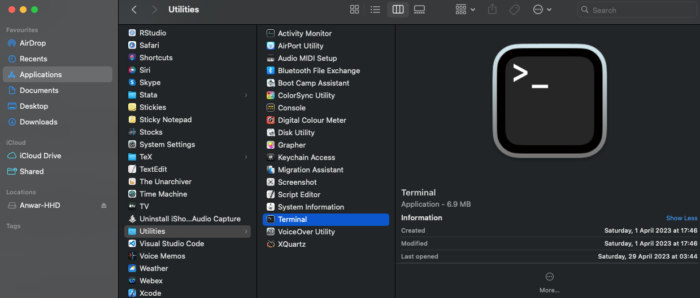

1 Installation of R and RStudio
1.1 What is R and RStudio?
R, or RStudio is a statistical software programming package that allows the user to carry out different types of statistical analysis. It can also be used as a GIS software to perform various kinds of spatial analysis. In the same vein, you can use it for data managing and geo-processing (i.e., importing different types of spatial formats for manipulation beforehand for spatial analysis). There are two versions:
The famous icon on the left is the version for R, and the one on the right is the version for RStudio. Both software packages are the same. The only difference is that RStudio is attractive, intuitive, and more importantly, it is user-friendly than Base R. So, we will be using this version (i.e., RStudio).
Let us talk about downloading RStudio.
1.2 Downloading and install R and RStudio on to your laptop
RStudio is an open source software, and today its the go-to software for many researchers - its highly recommended for anyone in the domains of data science, scientific research, and technical communication.
It is easy to access, and easy to download and install. In order for RStudio to work you must first install R. You can follow the steps to download and install the correct version of R and RStudio for your operating system (i.e., Windows or MAC).
1.2.1 Installation for MacOS users
You will need to have the following software installed for R and RStudio to work properly on MAC.
- R (version 4.2.3)
- RStudio (version 2023.06.2-561)
- XQuartz (version 2.8.5)
- XCode (version 14.3.1 (14E300c))
Installation of R (4.2.3) and RStudio (2023.06.2-561) on MAC:
| OS User type | R (Base) | RStudio Desktop |
|---|---|---|
| MAC | R-4.2.3.pkg | RStudio-2023.06.2-561.dmg |
- Download the file for R-4.2.3.pkg attached in the table above.
- Double-click the downloaded file (i.e., R-4.2.3.pkg) and follow the steps to complete the installation.
- Now, download the file (i.e.,
.dmg) for RStudio from the link provided in the above table. - Double-click the downloaded file (i.e., RStudio-2023.06.2-561.dmg) and then drag and drop the RStudio icon into the Applications folder to complete the installation.
Installation of XQuartz (2.8.5):
Some functions in R require some of the libraries from XQuartz to function properly on your MAC. You can download the latest version of XQuartz (XQuartz-2.8.5.pkg) by clicking on this LINK. You can simply complete the installation process by following its steps.
Installation of XCode (14.3.1 [14E300c]):
Some functions in R require some of the external developer tools from XCode application to function properly on your MAC.
- Go to the App Store application and get the XCode app downloaded by clicking on this LINK.
- Once it is downloaded, you can click on the “OPEN” button to verify it’s been downloaded. A window will prompt you to complete installation.
- Lastly, and for safe measures - we going to run this through our Terminal. You can open the Terminal program by going to the Applications > Utilities folder and select the Terminal application

- In the terminal, type the following code
xcode-select --install. If you get the following error message shown in the code chunk below, then it means that the XCode program has been installed properly - no need to do anything at this point. Otherwise, the terminal will proceed to install the XCode tool remotely.
xcode-select: error: command line tools are already installed, use "Software Update" in System Settings to install updatesThis completes the installation process for R and RStudio on MAC.
1.2.2 Installation for Windows users
You will need to have the following software installed for the rstan package to work on Windows.
- R (version 4.2.3)
- Rtools42 (version 4.2)
- RStudio (version 2023.06.0-421)
Installation of R (4.3.2) and RStudio RStudio (2023.06.2-561) on Windows:
| OS User type | R (Base) | RStudio Desktop |
|---|---|---|
| Windows | R-4.2.3-win.exe | RStudio-2023.06.2-561.exe |
- Download the file for R-4.2.3-win.exe attached in the table above.
- Double-click the downloaded file (i.e., R-4.2.3-win.exe) and follow the steps to complete the installation.
- Now, we can download the file (i.e.,
.exe) for RStudio from the link provided in the above table. - Double-click the downloaded file (i.e., RStudio-2023.06.0-421.exe) and follow the steps from the installer to complete the installation.
Installation of Rtools 4.2
For Windows users, after you have completed the installation for R and RStudio, you are required to install the Rtools42 package as it contains some libraries and developer tools for the smooth functioning of R.
- Download the latest version of Rtools42 by clicking on this LINK to initiate the download of the Rtools42 installer.
- Double-click the downloaded rtools42-5355-5357.exe file and follow the steps to complete the installation.
This completes the installation process for R and RStudio on Windows.
This concludes the installation section and sets yor computer up for this session.